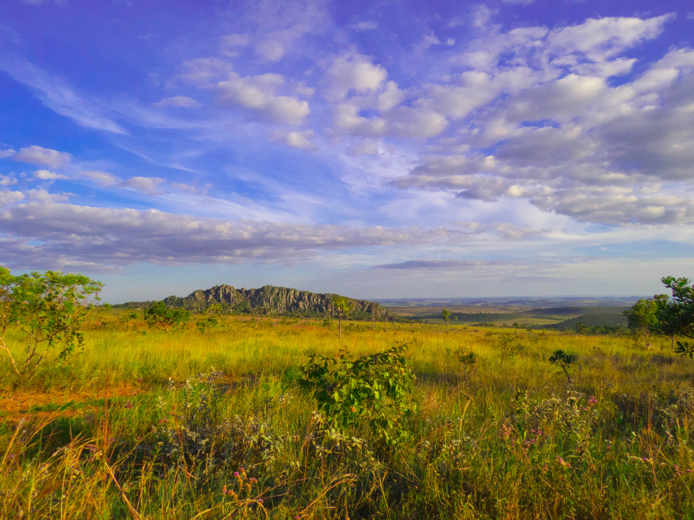

O Cerrado é considerado o segundo maior bioma da América do Sul e o segundo maior bioma do Brasil. É conhecido como savana brasileira e possui uma
grande biodiversidade. Sua vegetação possui características predominantes, como árvores de tronco grosso e tortuoso, além de gramíneas e arbustos.
O clima do Cerrado é tropical sazonal, apresentando duas estações definidas: uma seca e outra chuvosa. Os solos desse bioma são geralmente pobres
em nutrientes, apresentam coloração avermelhada e alta porosidade. A fauna do Cerrado, apesar de pouco conhecida, é bastante diversa, contando com
espécies como onça-pintada e tamanduá-bandeira. Infelizmente, o Cerrado é uma formação vegetal que vem sendo bastante devastada, principalmente pela
expansão de atividades agropecuárias, o que tem causado inúmeras perdas de biodiversidade.
Segundo o IBGE, o bioma Cerrado possui uma área de 2 036 448 km2. de extensão no Brasil. Diferente dos outros biomas, possui uma característica
singular: é o único bioma da América do Sul a limitar-se com vários outros biomas. Ao norte, faz fronteira com a Amazônia; ao nordeste e a leste,
com a Caatinga; a sudeste, faz limite com a Mata Atlântica; e a sudoeste, com o Pantanal.

A vegetação desse bioma é distribuída em três formações: Formações Florestais, Formações Campestres e Formações Savânicas. Já as espécies de plantas
encontradas no Cerrado, como as arbóreas, herbáceas, arbustivos e cipós, dividem-se em dois estratos, o estrato lenhoso e o herbáceo.
O bioma conta com o clima tropical sazonal, o qual apresenta duas estações bem-definidas: verões chuvosos e invernos secos. A temperatura média fica
em torno de 22°C, variando ao longo dos períodos. Os índices pluviométricos variam de acordo com a proximidade que o Cerrado tem com os demais biomas.
Quanto à fauna do Cerrado, para ter mais detalhes, vamos continuar nossa jornada pelo mesmo!